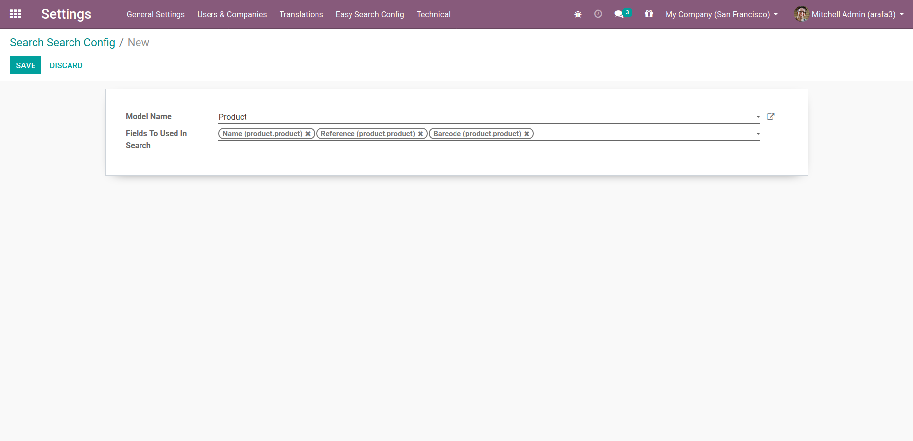

Choose the module that you want to apply search on it
After This select searchable fields that you want yo used it
And you can change it at any time
(Notes: Non-stored field sale.order.display_name cannot be searched).

